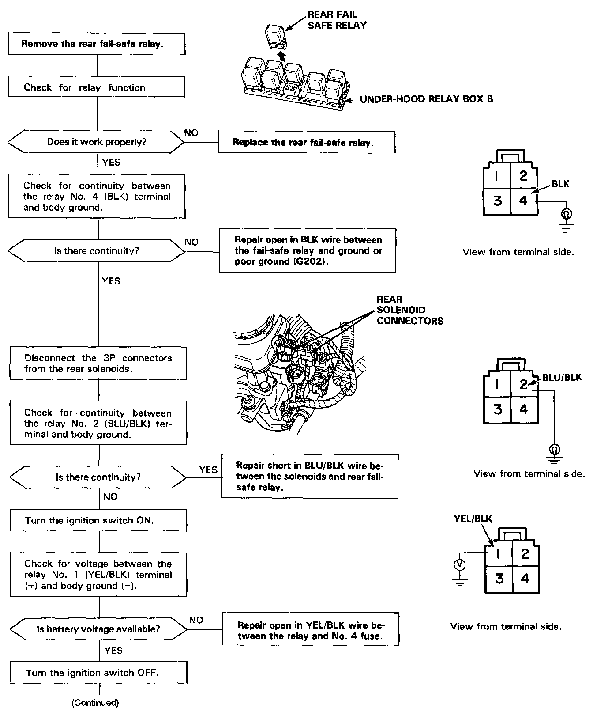
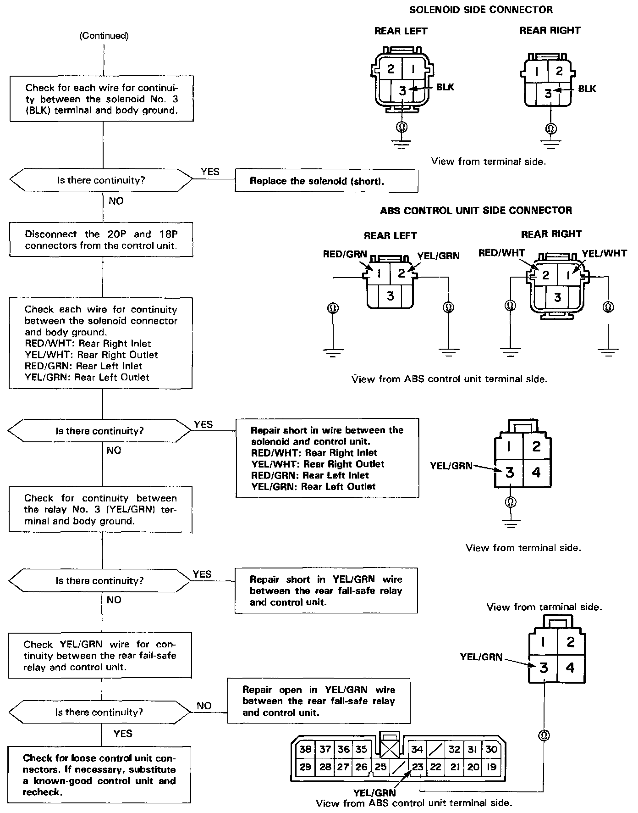

Operation CHARM
: Car repair manuals for everyone.
Home
>>
Acura
>>
1994
>>
NSX V6-3.0L DOHC
>>
Repair and Diagnosis
>>
Brakes and Traction Control
>>
Antilock Brakes / Traction Control Systems
>>
ABS Main Relay
>>
Testing and Inspection
>>
DTC 6-4 - Rear Fail-Safe Relay Circuit
DTC 6-4 - Rear Fail-Safe Relay Circuit


CAUTION: Use only the digital multimeter to check the system.